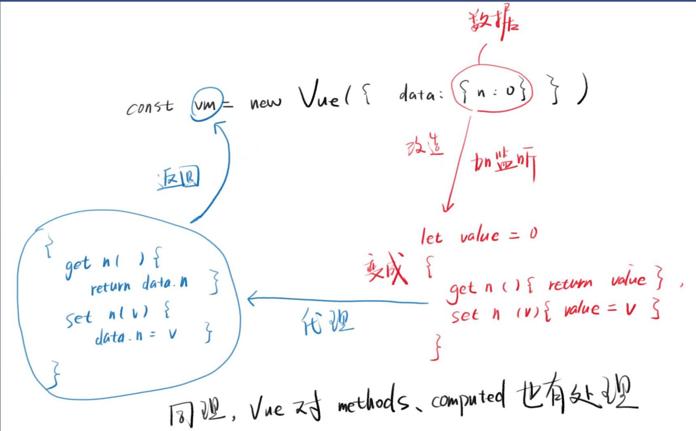
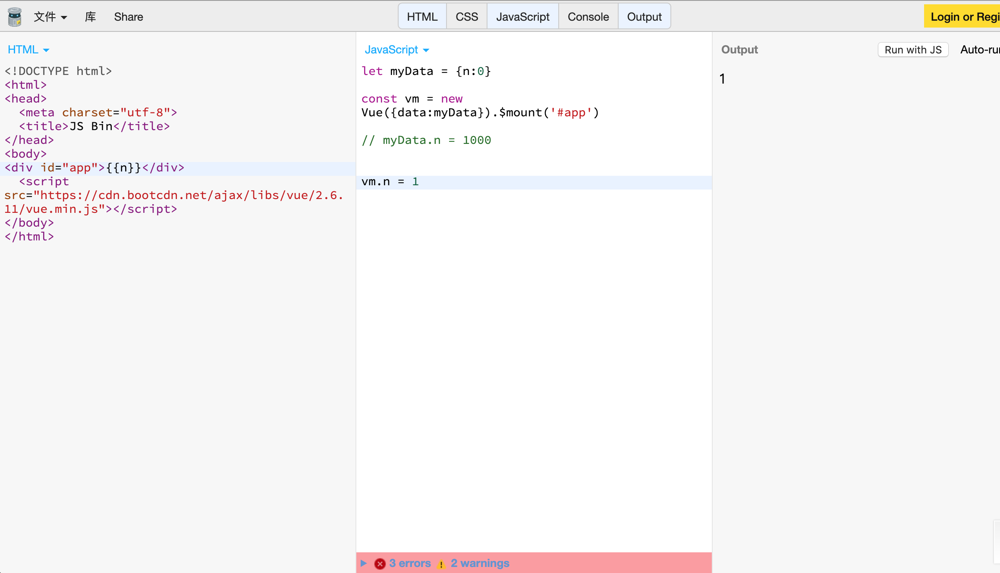

POSTS
Vue数据响应式
一个小例子
预备知识
getter和setter
let obj = { name:'Trump', position:'president', get imformation(){ return this.position + this.name }, set(newPresident){ obj.name = newPresident } }Object.defineProperty
let o = {} let x = 1 Object.defineProperty(o,'n',{ get(){ return x }, set(value){ x = value } })
一个实验
给对象添加一个属性
let data = { n:0 }使用defineProperty添加属性
let data = {} Object.defineProperty(data,'n',{ value:0 })n不能小于0
let data = {} let x = 0 Object.defineProperty(data,'n',{ get(){ return x }, set(value){ if(value < 0) return set(value){ x = value } } }) console.log(data.n) data.n = -1 console.log(data2.n) // 改不了值 data.n = 1 console.log(data2.n) //可以改值使用代理
let data = Proxy({data:{n:0}}) function Proxy({data}){ const obj = {} Object.defineProperty(obj,'n',{ get(){ return data.n }, set(value){ if(value < 0){ data.n = value } } }) return obj } //obj就是代理代理的bug
let myData = {n:0} let data = Proxy({data:myData}) console.log(data.n) myData.n = -1 console.log(data.n) // data.n会被改变添加监听(这就是代理模式)
let myData = {n:0} let data = Proxy({data:myData}) function Proxy({data}){ let x = data.n let obj = {} Object.defineProperty(data,'n',{ get(){ return x }, set(value){ if(value < 0) return x = value } }) Object.defineProperty(obj, 'n', { get(){ return data.n }, set(value){ if(value<0)return //这句话是多余的 data.n = value } }) return obj // obj 就是代理 } console.log(${data.n}) myData.n = -1 console.log(`${data.n}，设置为 -1 失败了`) myData.n = 1 console.log(`${data.n}，设置为 1 成功了`)
代理模式
- 对myData属性的读写 全权由另一个对象负责(data)
- 那么data就是myData的代理
Vue中的代理模式
const vm = new Vue({data:{myData}})
- vm就是data的代理
- vm会对myData的属性进行监控
为什么要监控？防止myData的属性改变而vm不知道 vm知道了就可以调用从而改变视图

Vue的数据响应式
什么是响应式？
一个物体能对外界刺激做出反应 他就是响应式
Vue的数据响应式
const vm = new Vue({data:{n:0}})
- 修改vm中的n 视图就会有响应
- Vue2是通过Object.defineProperty实现数据响应式

数据响应式中的bug
bug
使用Object.defineProperty的要求是n存在，如果n不存在就不会监听
在这个例子中，点击按钮不会显示b
因为Vue无法监听一开始就不存在的b
解决bug
数组中的响应式
Vue中篡改了数组的7个API 具体的内容详见变异方法
篡改思路
class VueArray extends Array{
push(...args){
const OldLength = this.length //当前数组长度
super.push(...args)
for(let i=OldLength;i<this.length;i++){
Vue.set(this,i,this[i])
// 在当前数组中设置一个为i的属性，属性值是this[i]
}
}
}